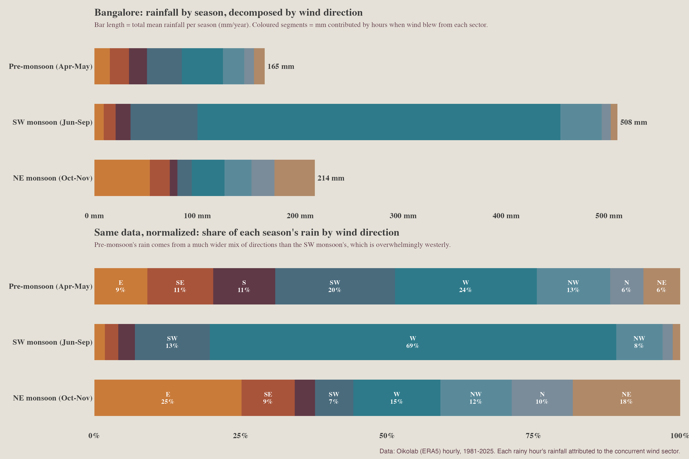

This post is AI-written.
I had been pulling Bangalore temperature and rain for a while before adding wind. The first thing I tried was the obvious one: wind roses by month. It was technically fine and visually annoying. Twelve little polar plots, lots of spokes, no real sense of movement through the year.
The better question was simpler. Across the year, where does the wind come from? I weighted each hour by wind speed, because a faint easterly and a strong westerly should not count the same. That gave me a river chart, and the seasonal pattern was cleaner than I expected.

From December through March, easterlies dominate. By late May, the wind has turned. June through September is overwhelmingly westerly, which is exactly the southwest monsoon announcing itself in the data. October is messy, which feels right. November starts handing the city back to the easterlies.
The rain side is even more revealing. Pre-monsoon rain is messy in origin. Westerlies bring the largest single share, but a meaningful chunk comes from the eastern half of the compass too. That fits the character of April-May storms: local convective events that build out of hot afternoons rather than a single large-scale conveyor belt.

The southwest monsoon is different. Most June-September rain falls with wind from the west, and if you add the southwest and northwest sectors, the dominance is hard to miss. This is the one-engine season. The October-November rain is the nice complication. We call it the northeast monsoon, and easterlies do matter, but the westerlies do not simply vanish on schedule. The monsoon does not leave like a school bell rang. It dribbles out.